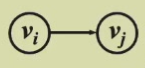

Chapter9.Graph Algorithm¶
1. Definitions¶
-
G (V, E) where G is graph 图, V = V (G) is finite nonempty set of vertices 顶点, and E = E (G) is finite set of edges 边
-
Undirected graph 无向图 : \((v_i, v_j) = (v_j, v_i)\) ::= the same edge.
-
Directed graph (digraph) 有向图 : \(<v_i, v_j> ::=\)
 \(≠ <v_j, v_i>\)
\(≠ <v_j, v_i>\) -
Restrictions:
- Self loop 自环 is illegal.
- Multigraph 多重图 is not considered.
-
Complete graph 完全图 : a graph that has the maximum number of edges
-
 \(v_i\) and \(v_j\) are adjacent 邻接 ；\(v_i, v_j\) is incident on \(v_i\) and \(v_j\)
\(v_i\) and \(v_j\) are adjacent 邻接 ；\(v_i, v_j\) is incident on \(v_i\) and \(v_j\) -
\(v_i\) is adjacent* to \(v_j\) ； \(v_j\) is adjacent from \(v_i\) ； \(<v_i, v_j>\) is *incident on \(v_i\) and \(v_j\)
-
Subgraph 子图 \(G' \subset G\) ::= \(V (G') \subseteq V (G) \space \&\& \space E (G') \subseteq E (G)\)
-
Path (\(\subset G\)) from \(v_p\) to \(v_q\) ::= \(\{v_p, v_{i 1}, v_{i 2}, \cdots, v_{in}, v_q\}\) such that \((v_p, v_{i 1}), (v_{i 1}, v_{i 2}), \cdots, (v_{in}, v_q)\) or \(<v_p, v_{i1}>, \cdots, <v_{in}, v_q>\) belong to \(E (G)\)
-
Length of a path ::= number of edges on the path
-
Simple path ::= \(v_{i 1}, v_{i 2}, \cdots, v_{in}\) are distinct
-
Cycle ::= simple path with \(v_p = v_q\)
-
connected 联通
-
undirected Graph
- \(v_i\) and \(v_j\) in an undirected \(G\) are connected if there is a path from \(v_i\) to \(v_j\) （联通指存在路径即可，不需要直接连接两点）
- An undirected graph \(G\) is connected if every pair of distinct \(v_i\) and \(v_j\) are connected
- (Connected) Component of an undirected G ::= the maximal connected subgraph最大联通的图
- A tree is a graph that is connected 联通 and acyclic 无环
-
directed Graph
- A DAG ::= a directed acyclic graph 有向无环图
- Strongly connected 强连通 directed graph G : for every pair of \(v_i\) and \(v_j\) in \(V (G)\), there exist directed paths from \(v_i\) to \(v_j\) and from \(v_j\) and \(v_i\).
- weakly connected 弱联通 directed graph G : the graph is connected without direction to the edges
- Strongly connected component 强连通分量 ::= the maximal subgraph that is strongly connected
-
-
Degree (v) ::= number of edges incident to v. For a directed G, we have in-degree and out-degree.
Representation of Graph¶
1. 邻接矩阵 (adjacency matrix)¶
2. 邻接表 (adjacency lists)¶

3. 邻接多重表 (adjacency multilist)¶
不作要求，了解即可

2. Topological Sort¶
-
AOV Network : digraph G in which \(V (G)\) represents activities and \(E (G)\) represents precedence relations
-
\(i\) is a predecessor of \(j\) : there is a path from \(i\) to \(j\)
-
\(i\) is an immediate predecessor 前任 of j : \(<i, j>\)in \(E (G)\)
-
Then \(j\) is called a successor (immediate successor 直接前任) of \(i\)
-
Partial order 偏序 : a precedence relation which is both transitive (\(i \to k, k\to j\Rightarrow i\to j\)) , irreflexive (\(i\to i\) is impossible ) and anti-symmetric)\(((i→j)∧(j→i)⇒i=j)\)
-
Feasible AOV network must be a DAG (directed acyclic graph).
[Definition] A topological order is a linear ordering of the vertices of a graph such that, for any two vertices, \(i\), \(j\), if \(i\) is a predecessor of in\(j\) the network then \(i\) precedes \(j\) in the linear ordering.
- The topological orders may not be unique for a network.
// version 1
Void Topsort (Graph G)
{
Int Counter;
Vertex V, W;
For (Counter = 0; Counter < NumVertex; Counter++)
{
V = FindNewVertexOfDegreeZero (); // O (|V|)
If (V == NotAVertex)
{
Error ("Graph has a cycle");
Break;
}
TopNum[V] = Counter; // or output V
For (each W adjacent from V)
Indegreep[W]--;
}
}
FindNewVertexOfDegreeZero ()：扫描Indegree[]数组，找到入度为 0 且未赋予拓扑序的顶点，如果没有找到顶点，那么表明图中出现了环- 每处理完一个顶点 V 后，就需要让从 V 出发与 V 邻接的顶点的入度 -1，相当于在图上移除了顶点 V 以及它的所有出边
- Time Complexity \(T=O (|V|^2)\)
// version 2, using queue ADT
Void Topsort (Graph G)
{
Queue Q;
Int Counter = 0;
Vertex V, W;
Q = CreateQueue (NumVertex);
For (each vertex V)
If (indegree[V] == 0)
Enqueue (V, Q);
While (! IsEmpty (Q))
{
V = Dequeue (Q);
TopNum[V] = ++Counter; // assign next
For (each W adjacent from V)
If (--indegree[W] == 0)
Enqueue (W, Q);
} // end-while
If (Counter != NumVertex)
Error ("Graph has a cycle")
DisposeQueue (Q); // free memery
}
将所有未赋予拓扑序的、度为 0 的顶点放入特殊的盒子（比如队列或 *栈）里
- Time Complexity \(T=O (|E|+|V|)\)
3. Shortest Path Algorithms¶
Given a digraph \(G = (V, E)\), and a cost function \(c (e)\) for \(e \in E (G)\). The length of a path \(P\) from source to destination is \(\sum_{e_i \in P} c (e_i)\) (also called 带权路径长度 weighted path length).
3.1 Single-Source Shortest-Path Problem¶
Given as input a weighted graph, \(G = (V, E)\), and a distinguished vertex \(s\), find the shortest weighted path from \(s\) to every other vertex in \(G\).
1. Unweighted Shortest Paths¶
- Table[ i ]. Dist: distance from \(s\) to \(v_i\) / initialized to be \(∞\) except for \(s\) /
- Table[ i ]. Known: 1 if \(v_i\) is checked; or 0 if not
- Table[ i ]. Path: for tracking the path / initialized to be 0 /
广度优先搜索 (breadth-first search, BFS)
Void Unweighted (Table T){
Int CurrDist;
Vertex V, W;
For (CurrDist = 0; CurrDist < NumVertex; CurrDist++){
For (each vertex V)
If (! T[V]. Known && T[V]. Dist == CurrDist){
T[V]. Known = true;
For (each W adjacent to V)
If (T[W]. Dist == infinity){
T[W]. Dist = CurrDist + 1;
T[W]. Path = V; // (*)
}// end-if Dist == Infinity
} // end-if !Known &&Dist == CurrDist
} // end-for CurrDist
}
- \(T=O (|V|^2)\)
// version 2
Void Unweighted (Table T){
// T is initialized with the source vertex S given
Queue Q;
Vertex V, W;
Q = CreateQueue (NumVertex);
MakeEmpty (Q);
Enqueue (S, Q); // Enqueue the source vertex
While (! IsEmpty (Q)){
V = Dequeue (Q);
T[V]. Known = true; // not really necessary
For (each W adjacent to V)
If (T[W]. Dist == Infinity){
T[W]. Dist = T[V]. Dist + 1;
T[W]. Path = V;
Enqueue (W, Q);
} // end-if Dist == Infinity
} // end-while
DisposeQueue (Q); // free memory
}
2. Dijkstra's Algorithm (for weighted shortest paths)¶
- 令 \(S = \{s\) 和已找到最短路径的顶点 \(v_i\) 的集合 \(\}\)
对于 \(\forall u \notin S\)，定义 \(\text{distance}[u] =\) 路径 \(\{s \rightarrow (v_i \in S) \rightarrow u\}\) 的最小长度
- Dijkstra 算法按阶段执行，在每个阶段中，挑选一个顶点 \(v\)，它是所有未被标记的顶点中 \(d_v\)最短的顶点（有多个最短则任意挑选）
- 对于从顶点 \(v\) 出发的邻接顶点 \(w\)，\(d_w = \min (d_w, d_v + c_{v, w})\)
- 标记顶点 \(v\)，即令 \(v \in S\)
- 然后对于剩余未被标记的顶点，重复上述操作，直至所有顶点均被标记
不难发现，这是一种贪心算法 Greedy Algorithm
Some Preparations¶
// Declarations for Dijkstra's algorithm
Typedef int Vertex
Struct TableEntry
{
List Header; // Adjacency list
Int Known;
DistType Dist;
Vertex Path;
};
// Vertices are numbered from 0
#define NotAVerTex (-1)
Typedef struct TableEntry Table[NumVertex];
// Initialization
Void InitTable (Vertex Start, Graph G, Table T)
{
Int i;
ReadGraph (G, T);
For (i = 0; i < NumVertex; i++)
{
T[i]. Known = False;
T[i]. Dist = Infinity;
T[i]. Path = NotAVerTex;
}
T[Start]. Dist = 0;
}
// Print shortest path to V after Dijkstra has run
// Assume that the path exists
Void PrintPath (Vertex V, Table T)
{
If (T[V]. Path != NotAVertex)
{
PrintPath (T[V]. Path, T);
Printf (" to");
}
Printf ("%v", V) // %v is pseudocode
}
Codes¶
Void Dijkstra (Table T){
Vertex V, W;
For (;;){
V = smallest unknown distance vertex;
If (V == NotAVertex)
Break;
T[V]. Known = true;
For (each W adjacent to V)
If (! T[W]. Known)
If (T[V]. Dist + Cvw < T[W]. Dist) // 这步操作被称为“松弛”
{
Decrease (T[W]. Dist to T[V]. Dist + Cvw);
T[W]. Path = V;
} // end-if update W
} // end-for (;;)
} // now work for edge with negative cost
Time Complexity¶
-
Implementation 1
- \(V\) = smallest unknown distance vertex;
/ simply scan the table – \(O (|V|)\)/
- \(T = O (|V|^2 + |E|)\) - Good if the graph is dense 稠密 （此时复杂度相当于线性复杂度)
-
Implementation 2
- \(V\) = smallest unknown distance vertex;
/ keep distances in a priority queue and call DeleteMin – \(O (\log|V|)\)/
-
Decrease ( \(T[W]. Dist\) to \(T[V]. Dist + C_{vw}\) );
-
Method 1: DecreaseKey – \(O (\log|V|)\) \(T = O (|V|\log|V| + |E|\log|V|) = O (|E|\log|V|)\)
-
Method 2: 将更新后的 \(d_w\) 插入堆中
在
V = smallest unknown distance vertex;中，重复使用DeleteMin，直到未标记的点出现（标记过的点就扔掉不用） \(T = O (|E|\log|V|)\) but requires \(|E|\) DeleteMin with \(|E|\) space -
3. Graphs with Negative Edge Costs¶
- Codes
无权重最短路算法 + Dijkstra 算法
- 将起始顶点 S 放到队列中
- 在每一阶段取队头元素\(v\)，找出\(v\)的所有邻接顶点\(w\)
- 若\(d_w > d_v + C_{v, w}\)，则更新\(d_w\)的值，并且若\(w\)不在队列，把它放入队列中
- 重复过程直到队列为空
Void WeightedNegative (Table T)
{
Queue Q;
Vertex V, W;
Q = CreateQueue (NumVertex);
MakeEmpty (Q);
Enqueue (S, Q); // Enqueue the source vertex
While (! IsEmpty (Q)) // each vertex can dequeue at most |V| times
{
V = Dequeue (Q);
For (each W adjacent to V)
If (T[V]. Dist + Cvw < T[W]. Dist) // no longer once per edge
{
T[W]. Dist = T[V]. Dist + Cvw;
T[W]. Path = V;
If (W is not already in Q)
Enqueue (W, Q);
} // end-if update
} // end-while
DisposeQueue (Q); // free memory
} // negative-cost cycle will cause indefinite loop
-
\(T=O (|E|\times|V|)\)
-
如果出现负值环，该算法将会陷入无限循环。因此，记录每个顶点的出队次数，发现有顶点出队次数多于 \(∣V∣\) 次时，就终止程序
4. Acyclic Graphs¶
-
If the graph is acyclic, vertices may be selected in topological order since when a vertex is selected, its distance can no longer be lowered without any incoming edges from unknown nodes.
-
\(T = O (|E| + |V|)\) and no priority queue is needed.
Application:
- AOE Networks

\(a_i\) := activity，\(v_j\): Signals the completion of \(a_i\)

注：必要时需要添加 dummy edges 和 dummy nodes，避免错误或缺少的依赖关系产生
-
计算 EC
Start from \(v_0\), for any \(a_i = <v, w>\), we have
\[ EC[0]=0, EC[w] = \max_{(v, w) \in E} \{ EC[v] + C_{v, w} \} \] -
计算 LC
Start from the last vertex, for any \(a_i = <v, w>\), we have
\[ LC[endIndex]=EC[endIndex], LC[v] = \min_{(v, w) \in E} \{ LC[w] - C_{v, w} \} \] -
Slack Time of \(<v, w> = LC[w] - EC[v] - C_{v, w}\)
-
Critical Path : path consisting entirely of zero - slack edges.
3.2 All-pairs Shortest Path Problem¶
For all pairs of \(v_i, v_j\) (\(i \neq j\)), find the shortest path between.
- Method 1: Use single-source algorithm for \(|V|\) times.
\(T=O (|V|^3)\) - works fast on sparse graph
- Method 2: \(O (|V|^3)\) algorithm
4. Network Flow Problems¶

4.1 Solution¶
- allow the algorithm to undo 撤销 its decisions

Analysis¶
前提：所有边的容量为整数
- An augmenting path can be found by a depth first search algorithm
\(T=O (f\cdot|E|)\), where \(f\) is the maximum flow
如果我们随机挑选增广路径，挑到一条包括 \(a→b\) 的路径，就会产生问题：
Random augmentations could continually augment along a path that includes the edge connected by a and b. If this were to occur repeatedly, 2,000,000 augmentations would be required, when we could get by with only 2.
Solution¶
-
在选择增广路径时，总是挑选对流量提升最大的路径
\[ \begin{align*} T&=T_{\text{augmentation}}\cdot T_{\text{find a path}}\\ &=O (|E|\log \text{cap}_{\text{max}})\cdot O (|E|\log |V|)\\ &=O (|E|^2\log |V|) \quad (\text{if } \text{cap}_{\text{max}} \text{ is a small integer}) \end{align*} \] -
在选择增广路径时，挑选边最少的增广路径
\[ \begin{align*} T&=T_{\text{augmentation}}\cdot T_{\text{find a path}}\\ &=O (|E|\cdot |V|)\cdot O (|E|)\text{(unweighted shortest path algorithm)}\\ &=O (|E|^2\log |V|) \end{align*} \]
5. Minimum Spanning Tree¶
【Definition】 A spanning tree of a graph G is a tree which consists of V (G) and a subset of E (G).
Note
- The minimum spanning tree is a tree since it is acyclic -- the number of edges is \(|V| - 1\).
- It is minimum for the total cost of edges is minimized.
- It is spanning because it covers every vertex.
- A minimum spanning tree exists iff G is connected.
- Adding a non-tree edge to a spanning tree, we obtain a cycle.
5.1 Prim's Algorithm¶
- 初始情况下，先将一个顶点作为树的根放入树内
- 在每个阶段，添加边 \((u, v)\)，满足 $(u, v) $的权重是来自已有生成树的顶点 \(u\) 和来自生成树外的 \(v\) 之间的所有边中权重最小的那条，且不产生环，然后将新的顶点 \(v\) 添加至树里
- 重复上述步骤，直至所有顶点均在生成树内
时间复杂度：
- 不用堆（适用于稠密图）：\(O (|V|^2)\)
- 二叉堆（适用于稀疏图）：\(O (E\log|V|)\)
Int prim (int w_adj_mat[MAX][MAX], int n)
{
Int dist[MAX]; // distance from vertex i to the known part
Int prev[MAX]; // for tracing the edges of MST
Int known[MAX]; // 1 if the vertex i is checked, 0 if not
// initialization
For (int i = 0; i < n; i++)
{
Dist[i] = INFINITY;
Prev[i] = -1;
Known[i] = 0;
}
Dist[0] = 0; // start from vertex 0
For (int k = 0; k < n; ++k)
{
// choose the vertex closest to the known part
Int min_d = INFINITY;
Int min_v = -1;
For (int i = 0; i < n; i++)
{
If (! Known[i] && dist[i] < min_d)
{
Min_d = dist[i];
Min_v = i;
}
}
// relaxation of vertices adjacent to the chosen one
Known[min_v] = 1;
For (int i = 0; i < n; i++)
{
If (! Known[i])
{
If (w_adj_mat[min_v][i] && dist[i] > w_adj_mat[min_v][i])
{
Dist[i] = w_adj_mat[min_v][i];
Prev[i] = min_v;
}
}
}
}
// total edge weights
Int total_w = 0;
For (int i = 1; i < n; ++i)
Total_w += dist[i];
Return total_w;
}
5.2 Kruskal's Algorithm¶
maintain a forest
- 初始情况下，有 \(∣V∣\) 棵单个节点构成的树
- 添加一条边，可以合并两棵树。
- 挑选边（这里假设挑选边 \((u, v)\)）时要注意的细节：
- 如果 \(u, v\) 在同一个集合内，则不能添加这条边（否则会出现环）
- 否则加入这条边，使用
Union算法将两个集合合并起来 - 用堆维护未被检验过的最小的边，每当检验一条边时，使用
DeleteMin算法
Void Kruskal (Graph G)
{
T = { };
While (T contains less than [V] - 1 edges && E is not empty)
{
Choose a least cost edge (v, w) from E; // DeleteMin
Delete (v, w) from E;
If ((v, w) does not create a cycle in T)
Add (v, w) to T; // Union/Find
Else
Discard (v, w);
}
If (T contains fewer than [V] - 1 edges)
Error ("No spanning tree");
}
- 时间复杂度：\(T=O (|E|\log|E|)=O (|E|\log|V|),\quad (|E|=O (|V|^2))\)
6. Applications of Depth-First Search¶
- A generalization of preorder traversal
Void DFS (Vertex V)
{
Visited[V] = true; // mark this vertex to void cycles
For (each W adjacent to V)
If (! Visited[W])
DFS (W);
}// T=O (|E|+|V|)
6.1 Undirected Graphs¶
- 当且仅当 1 次 DFS 能够遍历所有顶点时，无向图是连通的
Void ListComponents (Graph G)
{
For (each V in G)
{
If (! Visited[V])
DFS (V);
Printf ("\n");
}
}
6.2 Biconnectivity¶
- \(v\) is an articulation point 关节点 if $ G' = \text{DeleteVertex}(G, v) $ has at least 2 connected components.
- \(G\) is a biconnected graph 双连通图 if \(G\) is connected and has no articulation points.
- A biconnected component 双连通分量 is a maximal biconnected subgraph.
Note: No edges can be shared by two or more biconnected components. Hence E (G) is partitioned by the biconnected components of G, and biconnected components are divided byarticulation points.
Finding the biconnected components of a connected undirected G¶
- Use depth first search to obtain a spanning tree of \(G\)

Note: If \(u\) is an ancestor of \(v\), then \(Num (u)<Num (v)\)
-
Find the articulation points in \(G\)
- 当且仅当根节点至少有 \(2\) 个孩子时，根节点为关节点
- 当且仅当除根节点外的顶点 \(u\)至少有 \(1\) 个孩子，且该孩子与它的祖先之间没有回边（即
Low (child) >= Num (u)）时，\(u\) 为关节点

- Therefore, \(u\) is an articulation point iff
- \(u\) is the root and has at least \(2\) children; or
- \(u\) is not the root, and has at least \(1\) child such that \(\text{Low (child)} \geq \text{Num (u)}\).
6.3 Euler Circuits¶
- Euler tour : Draw each line exactly once without lifting your pen from the paper
- Euler circuit : Draw each line exactly once without lifting your pen from the paper, AND finish at the starting point
Undirected Graph
- 【Proposition】An Euler circuit is possible only if the graph is connected and each vertex has an even degree. 当且仅当图是连通的，且每个顶点的度为偶数时，存在Euler circuit
- 【Proposition】An Euler tour is possible if there are exactly two vertices having odd degree. One must start at one of the odd-degree vertices. 当且仅当图是连通的，且仅有两个顶点的度为奇数时，存在Euler tour
Directed Graph
- 【Proposition】An Euler circuit is possible only if the graph is weakly connected and each vertex has the same in-degree and out-degree. 当且仅当图是弱连通的，且每个顶点的出度 = 入度时，存在Euler circuit
- 【Proposition】An Euler tour is possible if there are exactly one vertices in-degree = out-degree + 1, and others have the same in-degree and out-degree. 当且仅当图是弱连通的，且有且仅有一个顶点的出度 = 入度 + 1，有且仅有一个顶点的入度 = 出度 + 1，其余顶点的出度 = 入度时，存在Euler tour
Using DFS to find Euler Tours
- The path should be maintained as a linked list.
- For each adjacency list, maintain a pointer to the last edge scanned.
- \(T = O (|E| + |V|)\)